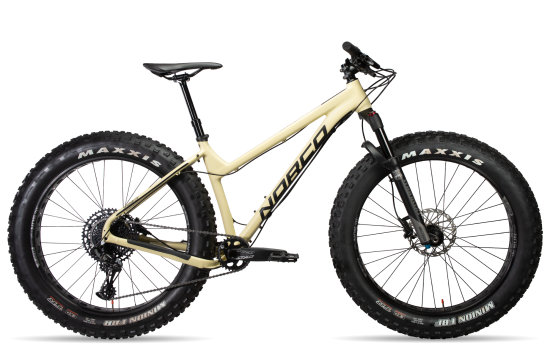

Norco Sasquatch Aluminum
Описание товара
Sasquatch обеспечивает отличную проходимость по снегу и песку для зимних экспедиций и незабываемых поездок на пляж.
Характеристики товара
- Рама: Norco Sasquatch, Aluminum, 12x197mm TA Dropouts
- Вилка: Manitou Mastodon Pro, 100мм Travel, 15x150мм TA, 51мм Offset
- Задний переключатель: SRAM NX Eagle, 12 скоростей
- Шины: Maxxis Minion FBF, 26x4.8", EXO/TR, Folding
- Тормоза: SRAM Level, 2 Piston Hydraulic Disc, Avid G2 180mm Rotor
Подробное описание товара
С легкой алюминиевой рамой и вилкой из карбона, Sasquatch - это эффективный и маневренный велосипед для всесезонных велосипедистов, ищущих круглогодичное приключение на толстых велосипедах.
Отличная тяга и плавучесть
Совместимый с шинами 26 "x 5,0" или 650B x 4,0 ", Sasquatch обеспечивает невероятное сцепление с дорогой и плавучесть в условиях изменяющейся местности, так что вы никогда не будете подвержены воздействию плохой погоды, глубокого снега или сложной местности.
Алюминиевая рама Sasquatch
Алюминиевая рама премиум-класса X6 - это идеальное сочетание долговечности и эффективности - именно то, что вам нужно, когда речь идет о круглогодичных приключениях на толстых велосипедах. Трубка с двойным торцом, а также передняя и задняя сквозные оси обеспечивают жесткость, где это необходимо, и соответствие требованиям, где это необходимо.